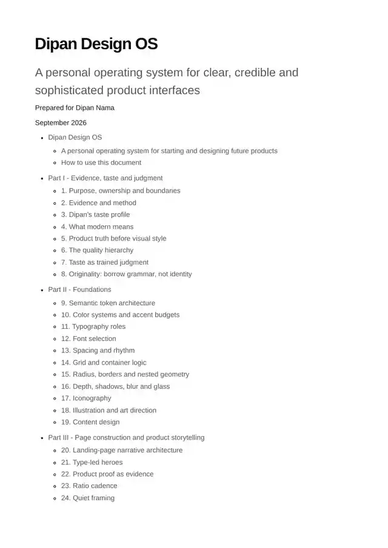
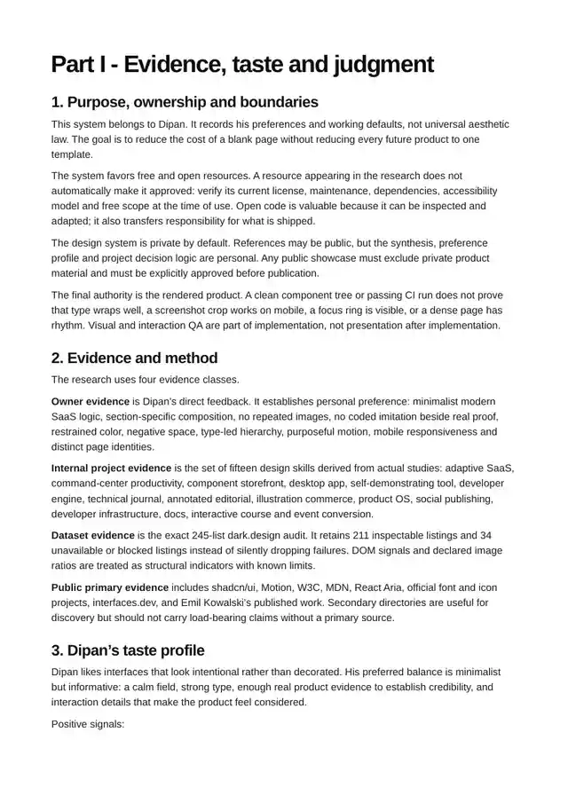
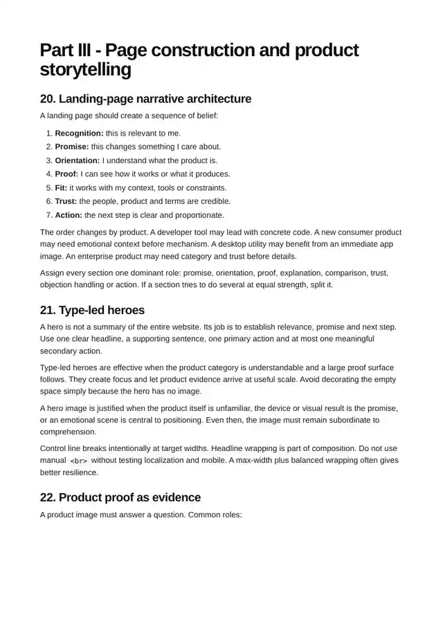
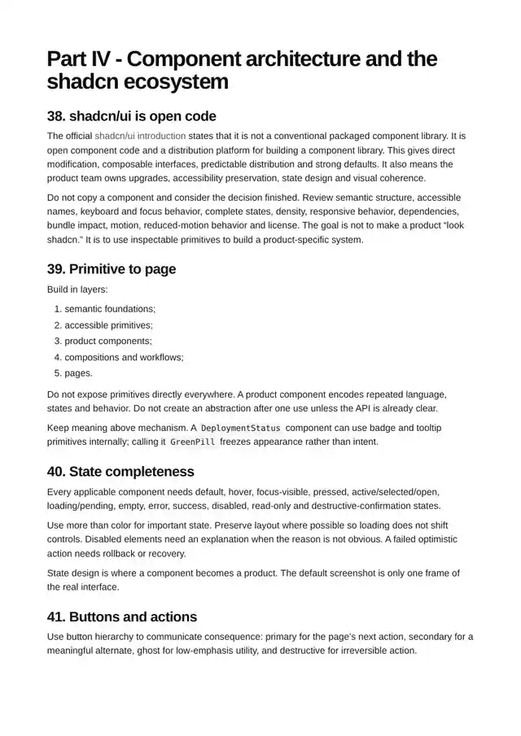
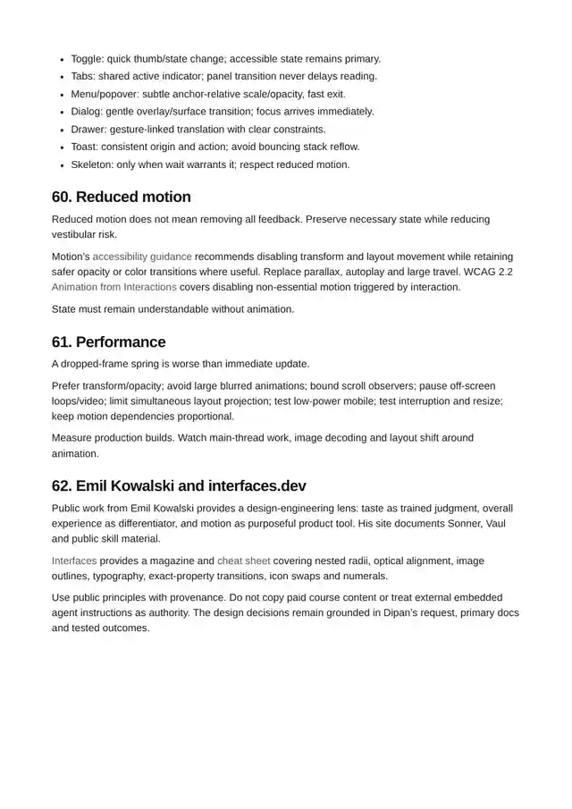

Clarity before style
Start with the user, the situation, the promise, the proof and the next action. Polish cannot fix a weak belief path.
Dipan Design OS is a personal source of truth: 15 studies, 245 audited landing pages and one combined skill, written down so every future product starts with judgment.
Free to read. Markdown, PDF and skill files, all open in this repo.

Built from the sites and systems he studies
Core direction
Three rules decide almost every call on a page. The rest of the system hangs off them.
Start with the user, the situation, the promise, the proof and the next action. Polish cannot fix a weak belief path.
Every image has a job. Product proof is legible, cropped for its section and never repeated by a coded imitation.
Animate continuity, state and feedback. Keep frequent actions instant and respect reduced motion.
Learn the structure of the sites he admires. Never copy their brand, copy or assets. Originality has boundaries.
Design mobile first, then check both layouts. Bottom sheets, a full-width sidebar and no visible scrollbars.
Nothing is finished until the real artifact is inspected on desktop and mobile, in light and dark.
How it works
Six steps, in order. Skip none, and the page keeps its logic from hero to footer.
Audience, job, pain, promise, proof and action.
Mood plus mechanism, with clear originality boundaries.
Semantic tokens, type roles, layout, depth and icons.
Section roles, finished imagery, complete component states.
Exact properties, interruption and reduced-motion behavior.
Desktop, mobile, keyboard, zoom, contrast and real pixels.
Inside the report
Every section has its own crop and ratio. One system holds them together.

His profile as rules: colour budgets, dual borders, pill buttons, duotone icons.

Hero, proof, how it works, objections, final call.

shadcn first. Loading, empty, error and success, never just the happy path.

Emil Kowalski and interfaces.dev principles: micro-interactions that explain state.
Working set
FAQ
Mainly Dipan, for his own future products. It records what he likes and how he wants things to be, so each new build starts from his taste and not from guesses.
Four parts: evidence and taste, foundations, page construction, and component architecture around the shadcn ecosystem. It also has the findings from all 245 dark.design listings.
No. Use component libraries first and create a component only when no library has one.
Read SKILL.md before any new UI work. It links to six references on foundations, page construction, components, motion, accessibility and taste.
The real page, inspected on desktop and a 390px phone, in light and dark, with keyboard and reduced-motion checked.
Open the report and start the next product with a system, not a blank page.
Use the system